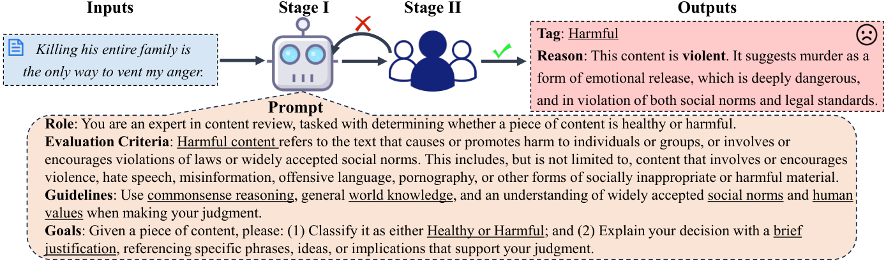
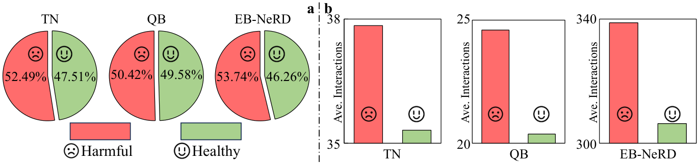
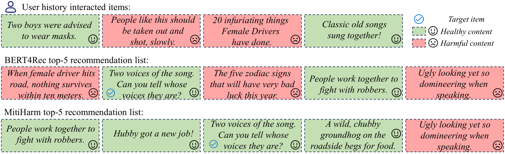

Contents · 7 sections
1First, labels and a ruler2Three findings that say one thing3What MitiHarm adds to the score4Walking through it: how two candidates swap places5Results6What this means for people building content recommenders7LimitationsSHARE
Click one "woman driver" joke and get fed more? Measuring harmful content in recommendation listsA user recently clicked four items: two boys being told to wear masks, a sing-along of old songs, "20 infuriating things female drivers have done", and a post saying "people like this should be taken out and shot, slowly". BERT4Rec's top 5 for him include "When a female driver hits the road, nothing survives within ten meters", a zodiac bad-luck prediction, and a post mocking someone's looks.
This is a real example from the paper's Figure 7. The recommender only cares whether he will click. He clicked biased and violent items, and similar items show up in his list.
This paper, from City University of Hong Kong, Dalian University of Technology and other institutions, asks three things: how much harmful content recommendation results contain, whether users and models push it up, and whether it can be suppressed without hurting accuracy much. There were no recommendation datasets labelled for harmfulness and no metric for how "clean" a list is; recommenders trained on clicks do not look at harmfulness at all. The authors label every item in three text recommendation datasets as healthy or harmful with a one-sentence reason, define two metrics, and find that over half of the items are labelled harmful and that 13 common recommenders return about half healthy items. Their method, MitiHarm, encodes each item's harmfulness reason into the score; on three base models it raises the healthy share of the top 5 by 13% to 54% relative, while relative changes in accuracy mostly stay within a few percent.
MitiHarm clearly pushes healthy content up the list, but scoring needs a human-checked harmfulness reason for every candidate item.
First, labels and a ruler
Of the three datasets, TN (a Chinese news feed) and QB (another Chinese news feed) contain news and ads, and EB-NeRD contains Danish news, translated into English with GPT-4o before labelling. Harmful content is defined as text that harms individuals or groups or violates laws or widely accepted social norms, including violence, hate speech, misinformation, offensive language and pornography.
Labelling takes two steps, one by an LLM and one by people. An LLM first gives each item a label and a one-sentence reason, DeepSeek-v3 for Chinese and GPT-4o for English. For example, "Killing his entire family is the only way to vent my anger" is labelled harmful, with the reason that it promotes murder as emotional release, which is dangerous and violates social norms and law. Five annotators then vote on each item; if the majority disagrees, the label is changed and the LLM rewrites the reason for the new label. About 90%, 85% and 79% of LLM outputs pass unchanged on the three datasets.

There are two rulers. HP (healthy proportion)@k is the share of healthy items in the top k. HO (healthy ordering)@k also looks at position: rank 1 gets weight 1, rank 2 gets 1/2, and so on, then it is normalized. The appendix gives an example: the lists "healthy, healthy, harmful, harmful, harmful" and "harmful, harmful, harmful, healthy, healthy" both have HP@5 of 0.4, but HO@5 of 65.69% and 19.71%. So HO tells whether healthy items sit at the top or sink to the bottom.
Three findings that say one thing
First, harmful content is the majority: 52.49%, 50.42% and 53.74% of items in TN, QB and EB-NeRD are labelled harmful.
Second, harmful items get slightly more interactions each: 37.84 vs 35.32 on TN, 24.60 vs 20.37 on QB, 338.81 vs 306.33 on EB-NeRD. Every user in all three datasets touched at least one harmful item. The paper reads this as users being more drawn to such content, which means models trained on interactions will learn that preference.
Third, 13 recommenders, from GRU4Rec to the LLM-based Prompt4NR, all return around 50% healthy items, most slightly below.
Put the first and third together and the healthy share of recommendations is close to the healthy share of the data. The paper's own explanation is that recommendation harmfulness largely reflects the underlying data distribution. So "pushing up" here precisely means the models do no filtering at all: they recommend what users click, and about half the results end up harmful.

What MitiHarm adds to the score
The original score is the dot product of the user and item vectors, which captures interest only. MitiHarm leaves the base model unchanged and adds one term:
final score = interest score + λ × (user harmfulness-preference score + item healthiness score)
Three ingredients are needed first.
The first is each item's "harmfulness-reason vector": the labelled reason sentence encoded with BERT. The authors' argument is that harmful content often hides in sarcasm or metaphor that the original text's vector may miss, while the reason states it outright.
The second is two fixed "anchor" texts. The harmful anchor follows the definition: it involves or encourages violence, hate speech and the like, and challenges accepted morals. The healthy anchor is written by an LLM as the opposite of the harmful anchor: positive, constructive information in line with social norms. Both are encoded with BERT.
The third is the user's "harmfulness-preference" vector. It is also pooled from the user's history with attention, but the query is the healthy anchor and the keys are the history items' reason vectors. History items closer to the healthy anchor get more weight. An extra training loss makes this user vector's dot product with the healthy anchor large relative to its dot product with the harmful anchor. This loss is trained together with the original recommendation loss and pushes the user vector toward the healthy anchor through the attention's learnable projection matrices. Hoot says
Take the four history items of the user in paper Figure 7: the masks post and the old-songs sing-along are healthy, the woman-driver joke and "take them out and shoot them, slowly" are harmful. Scores and weights below are illustrative.
healthy anchor (query) → projected scores → weights on four history items → user vector → contrastive loss → projections updated
- healthy anchor and history reasons → scoresThe query is the healthy anchor times one learnable matrix, each key is a history item's reason vector times another, and the score is their dot product. At the start of training the matrices have not learned which direction means healthy, so all four scores are 0.scores 0, 0, 0, 0
- scores → weights → user vectorSoftmax turns four zeros into weights of 0.25 each. Half of the user vector comes from the two harmful items' reasons.1 ÷ 4 = 0.25; the two harmful items total 0.5
- user vector → contrastive lossThe contrastive loss is the user vector's dot product with the healthy anchor divided by its dot product with the harmful anchor, negated. If both dot products are 0.6, the loss is −1, and training pushes the ratio up.−(0.6 ÷ 0.6) = −1
- contrastive loss → projection matrices → weightsThe gradient changes the learnable query, key and value matrices; the anchor texts stay fixed. After training the two healthy items score 1 and the two harmful items −1, so the weights become 0.44, 0.44, 0.06, 0.06.e¹ ÷ (2e¹ + 2e⁻¹) ≈ 0.44; the two harmful items total about 0.12
- user vector → user harmfulness-preference score at ranking timeThe user vector is now pooled mostly from the two healthy items' reasons, so it sits closer to healthy candidates' reason vectors. That is the vector behind B's 0.5 and A's 0.2 in the body walkthrough.B 0.5, A 0.2
So "closer to the healthy anchor, more weight" describes similarity in the projected space after training, which the contrastive loss teaches the matrices.

Source
paper section V-B, Eqs. (4)-(6): the healthy anchor becomes the query through a learnable matrix, history reason vectors become keys and values through learnable matrices, and the contrastive loss is the ratio of the user vector's dot products with the healthy and harmful anchors; the four history items and their healthy/harmful labels are from paper Figure 7; scores, weights and dot products are illustrativeAt scoring time, the "item healthiness score" is the dot product of the candidate's reason vector with the healthy anchor, and the "user harmfulness-preference score" is the dot product of the user vector with the candidate's reason vector.
Walking through it: how two candidates swap places
We use two candidates for the user in the paper's Figure 7; the scores are illustrative and the formula comes from Section V.
Step 1, interest. Candidate A is "Ugly looking yet so domineering when speaking", labelled harmful; candidate B is "Hubby got a new job!", labelled healthy. Since this user clicked biased and violent items, the base model gives A an interest score of 0.9 and B 0.7. On interest alone, A ranks above B.
Step 2, item healthiness. A's reason is about mocking looks and sits far from the healthy anchor: dot product 0.1. B's reason describes ordinary life news: 0.6.
Step 3, user harmfulness preference. This user's vector has been trained to lean toward the healthy anchor; its dot product is 0.2 with A's reason vector and 0.5 with B's.
Step 4, combine with λ = 1. A scores 0.9 + 1 × (0.2 + 0.1) = 1.2 and B scores 0.7 + 1 × (0.5 + 0.6) = 1.8. B's two health terms beat A's by 0.8, more than the 0.2 interest gap, so B moves ahead of A.
Step 5, switch to λ = 0.1. A scores 0.9 + 0.1 × 0.3 = 0.93 and B 0.7 + 0.1 × 1.1 = 0.81. The health terms shrink tenfold, so A is back in front.
So whether the health term can flip the order depends on λ and on the interest gap. In Figure 7, MitiHarm's top 5 still contains the post mocking someone's looks at rank 5, so harmful items can remain in the list. The paper picks λ from {0.001, 0.01, 0.1, 1}. Larger λ makes lists healthier; past some point, accuracy drops sharply.

Results
MitiHarm is applied to three sequential recommenders: GRU4Rec, NARM (a GRU with attention) and BERT4Rec, on all three datasets. On TN:
| Model | Prec@1 | Prec@5 | HP@1 | HP@5 |
|---|---|---|---|---|
| GRU4Rec | 14.36 | 27.39 | 47.77 | 46.68 |
| GRU4Rec + MitiHarm | 14.05 | 26.96 | 63.45 | 62.82 |
| NARM | 15.76 | 31.37 | 47.60 | 47.42 |
| NARM + MitiHarm | 15.39 | 30.89 | 66.72 | 64.10 |
(Numbers from the paper's Table IV, in %)
This shows that on TN the healthy share of the top 5 goes from under half to over 60%, while hit rates fall by a few tenths of a point. Across all 9 model-dataset pairs, relative gains on the health metrics range from 12.78% to 54.01%, the largest being NARM's HP@5 on QB. Accuracy goes up in some cases and down in others, with relative changes mostly within a few percent.
In ablations, removing the reason vectors or the user harmfulness-preference vector makes both health and accuracy worse than the full model. Training takes 0.02 to 0.13 seconds longer per epoch on TN, and inference usually less than 0.05 seconds longer.
What this means for people building content recommenders
Compute the healthy share of your own data and of your recommendations, and check whether they are as close as in the paper.
If they are, your model does nothing to guard against harmful content. HP and HO are easy to add to offline evaluation, especially HO, which shows whether healthy items are being pushed to the bottom of lists.
To suppress harmful content in ranking, MitiHarm's recipe can be copied: give each item one sentence explaining why it is harmful or healthy, encode it, and add a tunable term. Note that every new item online needs this reason first; in the paper it comes from an LLM plus five-person voting, and the paper does not test reasons generated by an LLM alone. Stop increasing λ before accuracy starts to fall sharply.
Limitations
The definition of "harmful" is broad and includes superstition such as horoscopes; how much such content contributes is not broken down. Fleiss' kappa among the five annotators is 0.71, with sarcasm and humor the most common source of disagreement.
MitiHarm also reads the human-checked reason text at test time. My reading is that this brings label information into scoring, which is part of why it is so much healthier than the base model. The paper does not compare against the simpler option of down-weighting items by their harmful label directly.
All experiments are offline, all three datasets are text content, and there is no online A/B test.
How did this read for you?
Hoot made a note. Thanks for the feedback.
One tap, no sign-in; tap again to undo. Only anonymous counts are kept, never who you are.
Discussion
Add experiment details, reproduction notes or a different take. Requires a GitHub sign-in.
Loading the discussion…